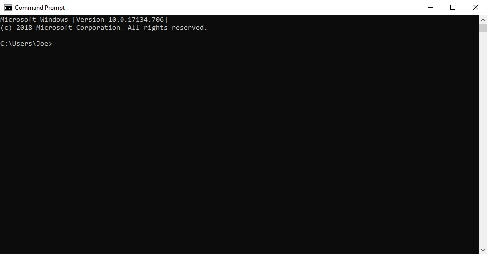

My First Time Using Git
When I first started using Git, I felt kind of lost, only because I've never really used anything like this before.
I will admit, once I looked it over for a little and started using some of the upload and commit functions, it all started to make sense and I do think that Git is really organized.

Above, is the homescreen of the Git repository. As you can see, Git is really good and keeping this organized.
Just Like Riding a Bike
I've used the commant line/terminal before, so I can't really say that it was anything to be afraid of, I will say that
it's been a refresher to me on some of the functions, so that's good!

Above, is something that I find really cool, the command line/terminal. It's such a cool way to feel like you're connected with the computer.
Honestly, the most confusing thing about using Git was just understanding how everything works when first using it,
once you use it for an hour, everything seems to be straight forward!